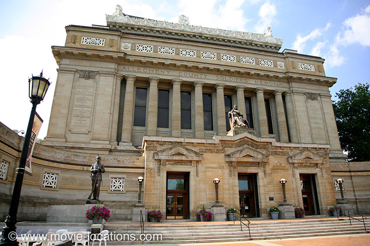

The Silence Of The Lambs
Main Content

Although set in such wide-ranging locales as ‘Ohio’, ‘West Virginia’ and ‘Tennessee’, Jonathan Demme’s superior thriller was made largely around Pittsburgh, western Pennsylvania.
Clarice Starling (Jodie Foster) meets the entomologist at the Carnegie Museum of Natural History in the Carnegie Institute, 4400 Forbes Avenue, Oakland (it’s where Jennifer Beals applies for a dance audition in Flashdance).
The exterior of Hannibal Lecter’s (Anthony Hopkins) place of internment, the ‘Baltimore Hospital’, was the Administration Building of the Western Center, an old mental hospital in Canonsburg, on I-79 about 15 miles south of Pittsburgh. It’s abandoned, but despite being designated a historic landmark, was finally demolished in 2011.
‘Memphis Town Hall’, where Lecter escapes from the holding cell and borrows the face of his guard, is the Allegheny County Soldiers and Sailors Memorial Hall & Museum, 4141 Fifth Avenue, a military museum, part of the University of Pittsburgh.
Many of the film’s interiors were shot in the abandoned Westinghouse turbine factory (now known as Keystone Commons).
The ‘Grieg Funeral Home’, where Clarice views the body of the murder victim and has a flashback to her own father’s funeral, was an empty house, formerly a real funeral parlor, on Main Street, Rural Valley, about 40 miles east of Pittsburgh. Filming also took place at Allegheny County Jail, 950 Second Avenue, Pittsburgh, and at the Greater Pittsburgh National Airport, to the west of the city.
Clarice Starling works out of the real FBI training HQ, Quantico, Virginia, on the US Marine Corps Base about 40 miles southwest of Washington DC.
Dr Lecter’s tropical retirement home at the end of the movie is Alice Town, on the island of North Bimini in the Bahamas. The Bimini Islands, 50 miles off the coast of Florida, are the closest of the Bahamas to the USA. Famed for big game fishing and celebrated by Ernest Hemingway, who also took up residence here and wrote of the islands in Islands in the Stream (filmed by Franklin Schaffner with George C Scott, in 1976). The Biminis, along with most islands in the Atlantic, were believed to have been the site of Atlantis, and are claimed to be home to the ‘Fountain of Youth’, the Healing Hole, which you can find on South Bimini.
Visit Info
Visit The Film Locations
Pennsylvania
Visit: Pennsylvania
Visit: Pittsburgh
Flights: Pittsburgh International Airport, 1000 Airport Boulevard, Pittsburgh, PA 15231 (tel: 412.472.3525)
Visit: the Carnegie Museum of Natural History, 4400 Forbes Avenue, Pittsburgh, PA 15213 (tel: 412.622.3131)
Visit: the Allegheny County Soldiers and Sailors Memorial Hall & Museum, 4141 Fifth Avenue
Virginia
Visit: Virginia
Bahamas
Visit: the Bahamas
Visit: Bimini